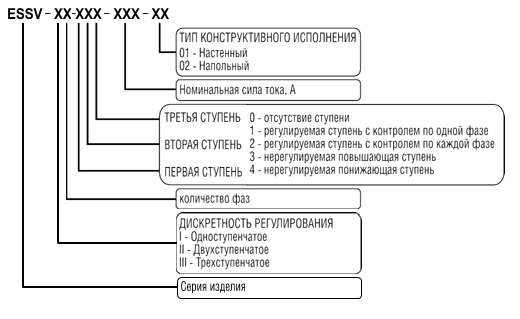

Certificat Tehnic
Fișa tehnică completă poate fi descărcată de la linkul de mai jos:
Descărcați fișa tehnică, PDF
Descărcați fișa tehnică ENG, PDF
Acest pașaport tehnic este un document care certifică parametrii de bază garantați de producător, caracteristicile tehnice ale normalizatorului de tensiune AC trifazat de economisire a energiei NORMEL din seria ESSV-I și care vă permite să vă familiarizați cu procedura de conectare și întreținere, precum și ca reguli pentru funcționarea sa în siguranță.
ATENŢIE!
Există o tensiune care pune viața în pericol în normalizatorul conectat la rețea. Persoanele care au studiat acest manual și regulile de siguranță electrică atunci când lucrează cu instalații electrice cu tensiune de până la 1000V au voie să lucreze cu normalizatorul.
Pentru a conecta normalizatorul la rețea, vă recomandăm să apelați la serviciile unui specialist calificat și certificat sau al unei companii de instalații.
SCOP ȘI CONDIȚII DE OPERARE
Normalizatorul este proiectat pentru a alimenta diverse echipamente, dispozitive și dispozitive electrice cu o tensiune sinusoidală trifazată normalizată în condiții de nerespectare a tensiunii de rețea cu cerințele GOST 32144-2013.
Normalizatorul este conectat la o rețea de alimentare cu tensiune alternativă 380V/400V cu o frecvență de 50Hz/60Hz. Produsul nu distorsionează parametrii sursei de alimentare. Normalizatorul este prevăzut cu o funcție de protecție la supratensiune de rețea foarte eficientă.
CONDIȚII DE OPERARE:
1. mediul este neexploziv, nu contine praf conductiv, vapori si gaze agresivi in concentratii care distrug metalele si izolatia;
2. fără vibrații crescute, tremurări, șoc;
3. Interval de temperatură ambientală de la -40 la +50 С;
4. Umiditatea relativă a aerului la 25 °C nu mai mult de 90%;
5. Presiunea atmosferică 100±4 kPa;
6. gradul de protecție a normalizatorului conform GOST14254-96 P30 (neetanșat).
COMPLETEZĂ
| Nume |
Cantitate |
| Normalizator de tensiune AC cu economie de energie seria NORMEL ESSV-I |
1 |
| Set de vârfuri de comutare și mâneci |
1 |
| Certificat tehnic |
1 |
| Pachet |
1 |
DATE TEHNICE:
* tensiune de alimentare: 400/380 V;
* frecventa 60/50 Hz;
* curent de sarcină pe fază: de la 30 la 500 A;
* Eficiență nu mai puțin de 99,7%;
* tip de sarcină - orice;
* sistem de filtrare fără comutare, care funcționează continuu la orice parametri de intrare în rețea - da;
* viteza de comutare nu mai mult de 20 ms;
* protectie impotriva curentilor de suprasarcina si scurtcircuitelor - da;
* tipul de versiune climatică a produsului: GOST 15150-69 UHL4;
* gradul de protecție al carcasei conform categoriei GOST 14254-2015 de la IP-20 la IP-66.
CODARE PRODUS

De exemplu:
Normalizatorul cu o singură treaptă cu o putere nominală de 110 kVA și un curent nominal de 160A are următoarea codificare: ESSV-I 3.200-160-02.
PRECAUȚII DE SIGURANȚĂ ȘI AVERTIZĂRI
Întreținerea normalizatorului din seria ESSV-I trebuie efectuată cu respectarea obligatorie a tuturor cerințelor de siguranță atunci când se lucrează cu instalații electrice, precum și cu toate instrucțiunile din acest manual.
Personalul de întreținere asociat cu racordarea, exploatarea, întreținerea normalizatorului trebuie să aibă cel puțin grupa IV pentru siguranță electrică pentru lucrări cu tensiuni de până la 1000V, să execute lucrări împreună cu sau la comandă, în conformitate cu regulile de funcționare tehnică a energiei electrice de consum. instalații.
Pentru a conecta normalizatorul, cablurile de rețea ale consumatorului trebuie să aibă un dispozitiv pentru întreruperea circuitelor conductorilor de fază și neutru ai sursei de alimentare.
Interzis:
depozitați, instalați și operați normalizatorul în încăperi cu un mediu exploziv sau activ chimic care poate distruge metalul și materialele izolante, în încăperi cu resturi de construcție și praf, în apropierea recipientelor cu lichide inflamabile;
conectați și operați normalizatorul fără împământare în conformitate cu cerințele PUE
utilizați același fir ca masă și zero;
operați normalizatorul în prezența deformărilor părților corpului, apariția de fum sau miros caracteristic izolației de ardere, apariția unui zgomot sau vibrații crescute, cu conexiuni deteriorate, cu fixarea neclară a întrerupătoarelor de circuit într-o poziție temporară;
efectuați orice lucrare legată de deschiderea carcasei fără a deconecta normalizatorul de la rețea;
rupeți sigiliile de protecție și faceți modificări structurale la aspectul normalizatorului;
operați normalizatorul la sarcini care depășesc caracteristicile sale de pașaport;
acționați normalizatorul cu ușa carcasei scoasă sau deschisă;
plasați obiecte străine pe suprafața exterioară și în interiorul carcasei normalizatorului;
restricționați accesul la normalizator, ceea ce duce la imposibilitatea deschiderii complete a ușii cochiliei.
ATENŢIE!
Instrucțiunile de mai jos sunt situate în interiorul ușii carcasei normalizatorului.
PREGĂTIRE PENTRU LUCRĂRI, CONECTARE ȘI PUNERARE în exploatare
înainte de a conecta normalizatorul, este necesar să vă asigurați că nu există daune mecanice ale corpului și componentelor interne ale acestuia;
dacă transportul și depozitarea au fost efectuate la temperaturi ambientale negative, înainte de instalare, normalizatorul trebuie păstrat la locul de instalare pentru a preveni apariția condensului timp de cel puțin 2 (două) ore cu ușa dulapului deschisă;
instalați normalizatorul pe o suprafață orizontală, plană, solidă, într-un loc special destinat acestuia, oferind acces liber la dispozitiv pentru conectarea și întreținerea acestuia;
instalarea și punerea în funcțiune a normalizatorului trebuie efectuate de personal calificat, cu respectarea cerințelor pașaportului tehnic, PUE, regulilor de siguranță, în conformitate cu schema de conectare;
pentru a efectua lucrările de instalare în siguranță, opriți sursa de alimentare;
înainte de pornire, împămânțiți corpul normalizatorului cu un fir cu o secțiune transversală în conformitate cu cerințele PUE, capitolul 1.7.126;
firul N, conectat la normalizator, trebuie să aibă o secțiune transversală de cel puțin 6 mm2;
secțiunea transversală a firelor de putere și împământare sunt selectate în conformitate cu valoarea curentului nominal pe baza cerințelor PUE, capitolele 1.3.11, 1.7.126;
conectați dispozitivul de comutare a sarcinii (întrerupător, întrerupător cu cuțit) la blocul de borne de ieșire „Încărcare 380 V”;
conectați linia de alimentare la contactele superioare ale mașinii introductive QS "Rețea 380 V";
întrerupătorul QA trebuie să fie în poziția „Pornit”; - alimentarea cu energie la contactele superioare ale mașinii introductive QS „Rețea 380 V”;
setați întrerupătorul QS în poziția „Pornit”;
mașini de comutare Q1 Q2 Q3 situate pe panoul de comandă, setate în poziția „Pornit”;
după 1 (un) minut, aplicați putere la sarcină;
ieșirea normalizatorului în modul de funcționare este confirmată de indicația verde arzătoare „Normalizare” de pe marginea superioară a carcasei normalizatorului.
ATENŢIE!
Produsul ESSV-I este realizat în conformitate cu PES capitolul 1.7.2, articolul nr. 4 „Instalații electrice cu tensiune până la 1kV cu neutru izolat”. Pentru a lucra în rețele cu un neutru solid împământat, instalați un jumper standard între barele „N” zero și „Re” de împământare situate pe panoul de control în partea sa dreaptă jos.
 Moldova, Chisinau, Decebal 99 of.5
Moldova, Chisinau, Decebal 99 of.5